Research Internship · HiPeRT Lab, University of Modena and Reggio Emilia
RoboRacer.ai (formerly known as F1/10) is an international autonomous racing platform — 1/10th scale cars racing head-to-head, fully autonomously. I spent six months at HiPeRT Lab in Modena as part of the RoboRacer.ai team, working on two distinct problems: teaching the car to see its opponents, and teaching it to follow a racing line smoothly. This work also formed the basis of my undergraduate thesis.
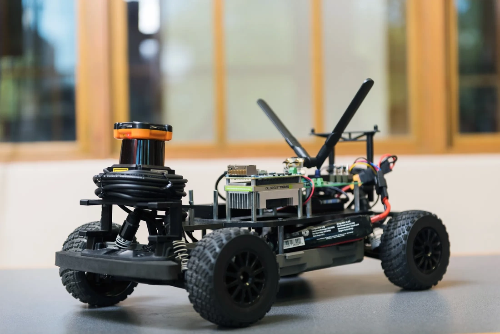
The first challenge: the car needs to detect opponent cars on the track in real time. Collecting a real annotated dataset for this is expensive and time-consuming — you'd need to run the cars, photograph every scenario, and label each frame by hand.
Instead, I developed a novel algorithm for synthetic dataset generation — automatically producing unique, annotated training images by compositing rendered car images onto real track background photographs at varying positions, scales, orientations, and lighting conditions. Every image in the dataset was unique and came with automatic bounding box annotations, with no manual labelling required.
Using this pipeline I generated a dataset of 1500+ images, then trained a YOLOv4 model using Darknet. The model achieved 97% detection accuracy on real test footage from the F1/10 car.
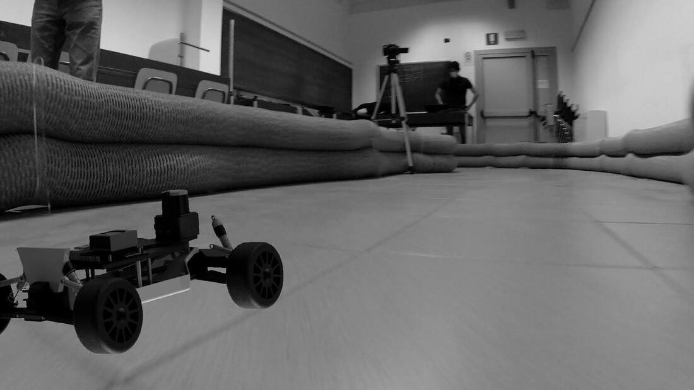
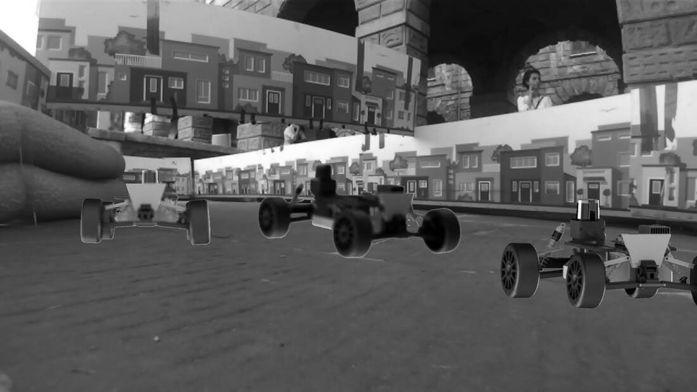
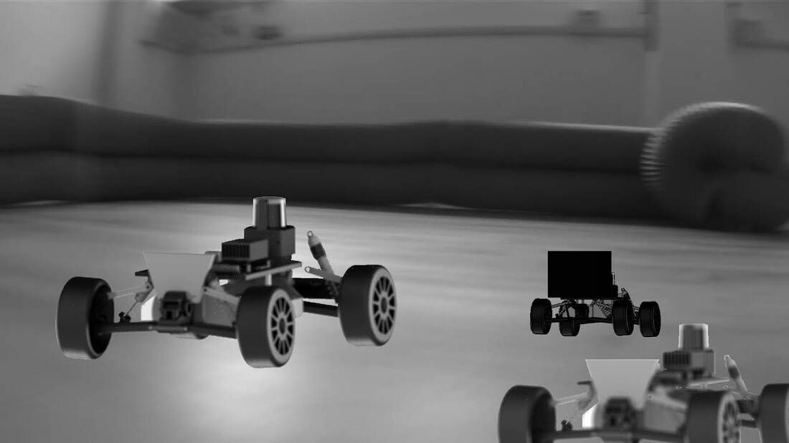
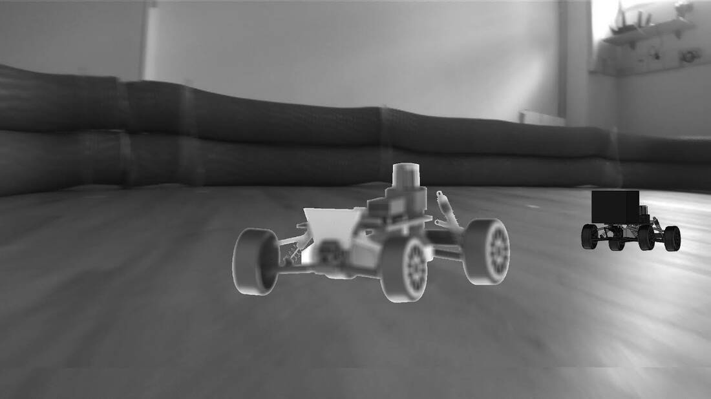
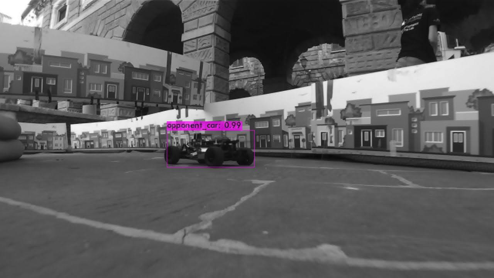
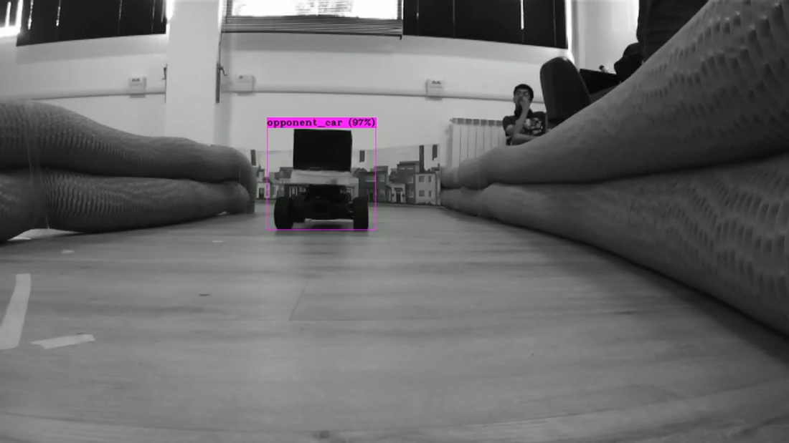
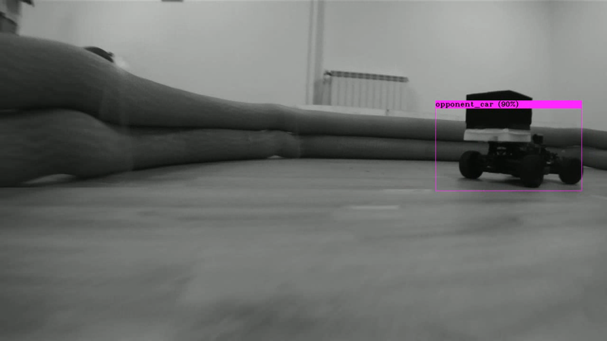
The second problem: the car's existing Pure Pursuit controller was underperforming at high speeds — struggling to track the racing line accurately through tight corners. I developed and integrated an MPC-curve (MPC-Curv) controller to replace it.
The controller uses a kinematic bicycle model to represent vehicle dynamics, and spline-based trajectory representation for smooth, continuous path tracking. At each timestep, the MPC solves an optimisation problem over a receding horizon, minimising lateral deviation from the racing line while respecting velocity and steering constraints.
Validated in the F1/10 gym simulator on the Las Vegas track, achieving a mean lateral error of under 2 cm — a significant improvement over the Pure Pursuit baseline.
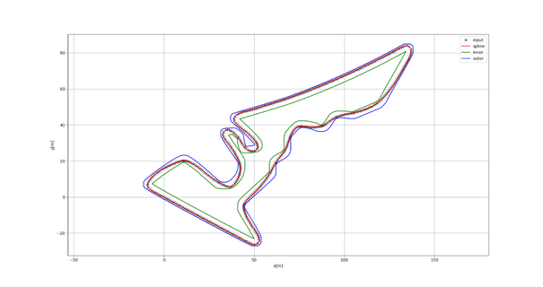
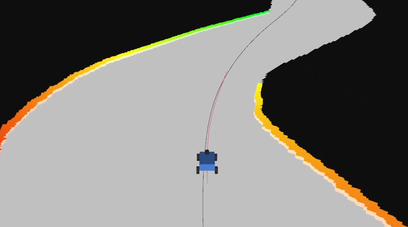
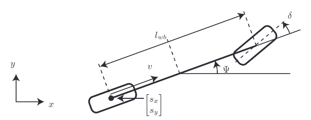
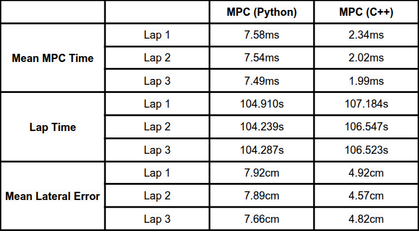
Both projects formed the basis of my undergraduate thesis, submitted as part of my B.E. at BITS Goa. It covers the full methodology and implementation of the synthetic dataset pipeline and the MPC-Curv controller in detail.
Application of Machine Learning for Perception and Control Algorithms of High-Speed Autonomous Racing Vehicles
B.E. Undergraduate Thesis · BITS Goa, 2023
Download PDF ↗